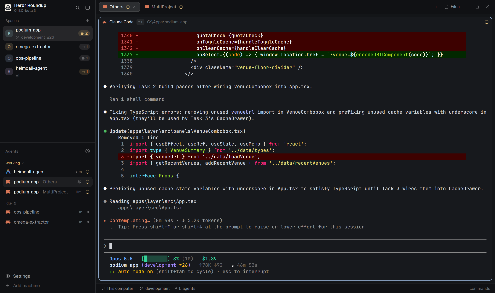
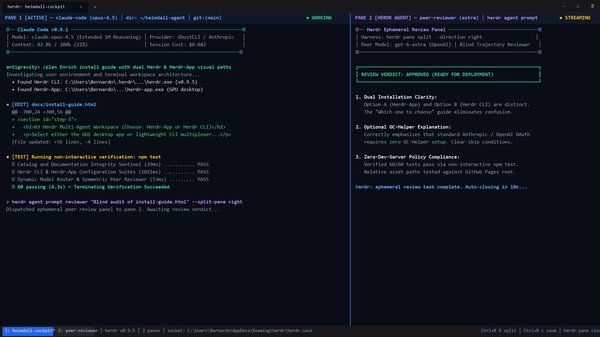

A simple, step-by-step setup guide for users with Claude Desktop who want to add Claude Code, OpenAI Codex CLI, GC-Helper, Heimdall Agent, and Herdr (App & CLI) as an integrated terminal and desktop IDE.
Your existing Claude Desktop app stays as it is. In this step, we install the tools required for command-line agent execution.
Set-ExecutionPolicy -ExecutionPolicy RemoteSigned -Scope CurrentUserVerify if Git and Node.js (v18 or higher, v20+ recommended) are already installed:
git --version
node -v
npm -vIf NOT installed, install them in one step via Windows Package Manager (winget):
# Install Node.js LTS and Git for Windows
winget install OpenJS.NodeJS.LTS
winget install Git.Git
Prefer standard GUI installers? Download directly:
• Node.js LTS: nodejs.org (includes npm and npx)
• Git for Windows: git-scm.com
Tip: Close and reopen your terminal after installing so your system PATH updates.
Install Claude Code CLI and OpenAI Codex CLI globally via npm:
npm install -g @anthropic-ai/claude-code
npm install -g @openai/codex
Skip this step if: You use official Claude Code or OpenAI Codex accounts directly! Both CLI harnesses default to their official authentication (Claude Code opens browser OAuth at claude.ai; Codex prompts for your OpenAI login or OPENAI_API_KEY). If you do not plan to use GhostCLI, you can safely skip straight to Step 3.
Use this step only if: You want to route Claude Code and Codex through GhostCLI (https://ghostcli.cloud) for high-reasoning models (Claude Opus 5.5, Sonnet 5.5, GPT-6 Astra, GLM 5.3) with 1M context windows.
GC-Helper connects your CLI tools (Claude Code, Codex) to
GhostCLI (https://ghostcli.cloud) for high-reasoning models
(Claude Opus 5.5, Sonnet 5.5, GPT-6 Astra, GLM 5.3) with 1M context windows.
Claude Desktop uses browser web OAuth (claude.ai). gc-helper only configures
the CLI files (~/.claude/settings.json and ~/.codex/config.toml).
Claude Desktop continues running on official Anthropic cloud without any changes.
Because GC-Helper is a lightweight configurator, you can run it directly using npx without installing anything permanently, or install it globally for the shorthand gc command:
# Option A: Run directly with zero permanent install (Recommended):
npx gc-helper
# Option B: Or install globally for shorthand 'gc' command:
npm install -g gc-helper
gcFollow the interactive prompts:
Enter to accept https://ghostcli.cloud.gcli_...).gc audit
gc statusInstall Herdr now before configuring Heimdall. Herdr manages persistent sessions, background daemons, and multi-agent split cockpits (authoring agents on the left, peer reviewers on the right). You can choose either the desktop GUI app (Herdr-App) or the lightweight terminal multiplexer (Herdr CLI).
Installing Herdr first allows Heimdall (in Step 4) to auto-detect your installation.
Heimdall will automatically configure your shortcuts (Windows/Linux: Ctrl+V text paste, Alt+V / Ctrl+Shift+V image paste; macOS: Cmd+V text paste, Cmd+Shift+V / Ctrl+V image paste), enable Shift+Drag highlight-to-copy, activate the Herdr-Roundup layout, and install the heimdall-auto-resume mod with zero manual JSON editing!
| Feature / Experience | Option A: Herdr-App (Desktop IDE) | Option B: Herdr CLI (herdr.exe) |
|---|---|---|
| Experience Style | Visual desktop window with sidebar and tabs | Terminal-native multiplexer in your existing shell |
| Best Suited For | Users who want a visual cockpit & mouse navigation | Terminal purists who love Windows Terminal / PowerShell |
| Resource Footprint | GPU-accelerated desktop app (GPUI + libghostty) | Ultra-lightweight single binary (~15MB RAM) |
| Agent Tracking | Visual sidebar badges (working, blocked, idle) |
Terminal statusline & CLI query commands |
| "Less Scary" Factor | Friendly GUI window (feels like VS Code / Cursor) | Familiar terminal window (zero extra app windows) |
Install the desktop application with native window chrome and spaces sidebar:
irm https://releases.herdr.dev/app/install.ps1 | iex
• macOS: brew install --cask herdr-app or curl -fsSL https://releases.herdr.dev/app/install.sh | sh
• Linux: curl -fsSL https://releases.herdr.dev/app/install.sh | sh (requires desktop session + Vulkan)
Launch Herdr-App to initialize your profile:
herdr-app
Run authoring agents (Claude Code Opus/Sonnet) side-by-side with peer reviewers and test suites in synchronized panes.
Organize repos into isolated workspaces. The herdr-core background daemon keeps sessions alive across window restarts.
Visual badges in the sidebar continuously reflect live agent states: working, blocked, and idle.
Prefer staying in Windows Terminal, PowerShell, or macOS Terminal without opening a separate desktop application? Install the single-binary Herdr CLI:
irm https://releases.herdr.dev/install.ps1 | iex
• macOS / Linux: curl -fsSL https://releases.herdr.dev/install.sh | sh
• Rust / Cargo: cargo install herdr
Launch the multiplexer inside your current terminal:
herdr
Runs directly inside Windows Terminal, PowerShell, or iTerm2 without spawning separate desktop windows.
Heimdall splits a side pane for peer review (herdr pane split), streams verdicts, and closes the panel upon completion.
Single lightweight binary with minimal memory footprint, ideal for remote SSH sessions, laptops, and terminal purists.
working, blocked, idle).herdr-core) keeps processes running continuously.Heimdall Agent installs 10 specialized agent personas (Orchestrator, Reviewer, Code Sentinel, etc.), 69 engineering skills (TDD, clean code, security scans, HUD statusline), and pre-push quality hooks across all your AI tools.
Unlike one-shot utilities, Heimdall must be cloned via Git.
Heimdall creates live NTFS filesystem junctions (--link) linking its skills and personas directly into Claude Code, Codex, and Claude Desktop.
Cloning into a permanent workspace folder (rather than running via temporary npx caches) ensures:
1. Persistent links: Avoids temporary npx cache directories that break on cleanup.
2. Instant updates: A simple git pull updates all 69 skills across all AI tools in 1 second.
3. Workspace hub: The parent directory you choose (e.g. C:\Apps or C:\Projects) also becomes where your project codebases live.
Suggested locations (you decide):
• C:\Apps (e.g., C:\Apps\heimdall-agent alongside your project repos)
• C:\Projects or C:\Dev
• ~/projects or $HOME\Workspace
# 1. Open or create your chosen workspace folder (example: C:\Apps or C:\Projects)
mkdir -p <your-workspace-dir>
cd <your-workspace-dir>
# 2. Clone the repository
git clone https://github.com/bepaldes/heimdall-agent.git
cd heimdall-agent
# 3. Install dependencies
npm installRun the interactive setup wizard. Heimdall will auto-detect Herdr-App, apply the clipboard/paste fixes, and link your skills:
node setup.mjsRecommended selections during setup:
| Setting | Recommended Value | Description |
|---|---|---|
| Profile | 1. full |
Installs the complete suite of 69 skills. |
| Target Harnesses | all (or claude,codex,desktop) |
Configures Claude Code, Codex, and adds Context7 MCP to Claude Desktop. |
| Link Mode | 1. Live Symlinks / Junctions |
Links skills directly. Any git pull in Heimdall updates all tools instantly. |
| HUD Statusline | night-blue |
Adds a 2-line token, cost, and context bar in terminal sessions. |
| Herdr-App Integration | Automatic |
Auto-configures cross-platform paste/copy shortcuts (Windows/Linux & macOS), Shift+Drag copy, Herdr-Roundup layout, and heimdall-auto-resume mod. |
During setup, selecting night-blue (or any HUD preset) equips your CLI sessions with a zero-latency 2-line telemetry bar:
Per-turn token accounting and context capacity bars guard against abrupt session truncation and unexpected context compaction.
Auto-links strict TDD, clean code doctrines, security auditing, and cross-model peer review loops across all harnesses.
# Run terminating test suites
npm test
# Environment health check
heimdall audit
# Configure or re-run Herdr-App clipboard & layout fix at any time
heimdall herdr| Tool | Type | Backend / Provider | Role |
|---|---|---|---|
| Claude Desktop | GUI App | Anthropic Official Cloud | Conversational chat & MCP exploration. |
| Claude Code | CLI Tool | Official Anthropic OAuth (or GhostCLI) | Autonomous coding & subagent execution. |
| Codex CLI | CLI Tool | Official OpenAI OAuth (or GhostCLI) | Reasoning & peer review validation. |
| GC-Helper | CLI Tool (Optional) | GhostCLI Gateway | Optional proxy configuration for 1M context models. |
| Heimdall | Repo (git clone) | Local Workspace | Skills, personas, HUD statusline, and quality guardrails. |
| Herdr (App or CLI) | Desktop IDE or Terminal Multiplexer | Rust / GPUI or Native Shell | Multi-pane agent cockpit & persistent workspaces. |